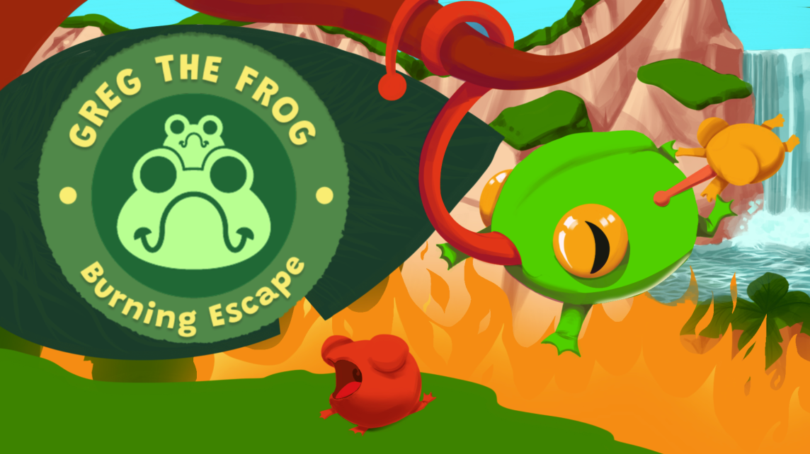

Greg the Frog: Burning Escape is a fast and momentum-driven platformer where split-second choices matter just as much as quick reflexes. A peaceful rainforest becomes a blazing nightmare in an instant. Smoke fills the air, branches crash to the ground, and fire races across the forest—and Greg the Frog must leap, swing, and slide through the burning wilderness before it is too late.
Scattered throughout the forest are baby frogs clinging to leaves or frozen in fear. Saving them slows Greg down, but leaving them behind comes at its own cost. Will you run fast to survive, or risk everything to save the others?

Developed as part of a 15-person multidisciplinary team, collaborating closely with designers and other disciplines to prototype, iterate, and polish gameplay systems.
Early version of the collectible pickup and follower-join logic.
Iterated follower system with refined collection and chaining behaviour.
Tracks every frog that is saved or lost.
Blends music and sound effects smoothly as the player moves across scenes.